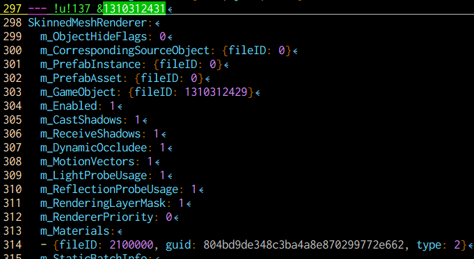
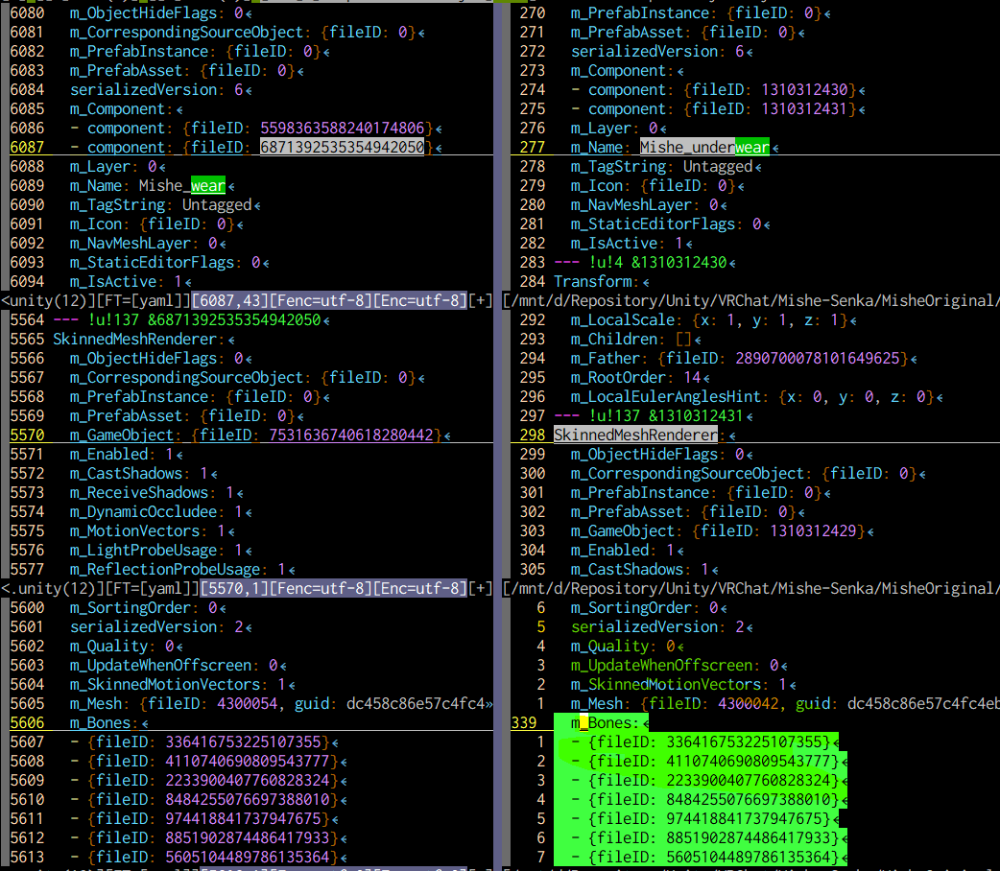

概要
ミーシェちゃんの下着をHierarchy消しちゃったけど、やっぱり使いたい！
問題
「元prefabあるんだし、そっちからコピーしてくればいいんじゃ？」 と思い、下記手順を実行しましたが
- ミーシェちゃんのprefabから、HierarchyにMishe （GameObject） を追加
Mishe/Mishe_underwearをMishenka 1 の配下にコピー

HierarchyからMisheを削除すると、ずれおちちゃいます。 Mishenka/Mishe_underwear（元Mishe/Mishe_underwear）に紐づいたボーンが削除されちゃうので、それはそう。
なので「一度削除した服や服飾（ボーンが紐づくGameObject）を復活」させるのは簡単には無理だと思ってましたが…… できました！
解決
ひとつ自明な解決方法として「MisheのArmatureをMishenkaに対応付けてコピーする2」というのがまず思いつくと思いますが、それだと余分にボーンのGameObjectが増えすぎるので、いやですよね。
今回はMisenka/Mishe_underwearの参照するボーンを書き換えてあげることで、対応します。
ちゅーこって早速やっちゃいましょっ。
Mishenka/Mishe_underwearのSkinnedMeshRendererが参照するm_Bonesを発見する
まずアバタープロジェクトのシーンファイル、ここでは./Assets/Scenes/SampleScene.unityをテキストエディタで開きます。
テキストを検索して、Mishenka/Mishe_underwearのGameObjectを見つけます。
さっきからテキトーに「紐づいたボーン」とか言っていますが、その実際の紐づきはSkinnedMeshRendererというコンポーネントに記述されています。 （残念ながら、その「紐づき」がUnity上から操作できないみたいなので、テキストエディタで開く必要があります。えーん。）
見つけたGameObject中のm_Componentのいずれかが、そのSkinnedMeshRendererです。
今回はその2つめでした。 （1つめはTransformでした。）

そのfileIDで検索して、SkinnedMeshRendererの記述を見つけます。

そこにm_Bonesというのがあるので、場所をマークしておいてください ✨

壊れていそうなのがまるわかりですね！
これを正しく書き換えれば、全てが完了します。
Mishenka/Mishe_wearのSkinnedMeshRendererが参照するm_Bonesをコピーする
「正しく書き換える」って簡単にいいますが、実際にどうすればいいのでしょうか。
実は我々は既に、これが正しかった頃の値をまだ持っています。
Mishenka/Mishe_wear（underwearでないGameObject。例えばMishe_shoesとかでもいけるかも。）のSkinnedMeshRendererが持っているm_Bonesを、先ほどMishenka/Mishe_underwearにしたように見つけます。

めっちゃ正しそう。
これをコピーしちゃいましょう。
直す！！
最後にコピーした内容を、最初にみつけたMishenka/Mishe_underwearのSkinnedMeshRendererにあるm_Bonesに上書きします。
☝️ コピーっ！

☝️ ペーストしたよっ！
できた！！
できた！！
終わりだよ。
この記事はこちらから修正リクエストを送ることができます。
アバターの削除してしまった服や服飾を、もう一度アバターに追加する - github
ゴミ箱ボタンの左にある、鉛筆ボタンを押してね！